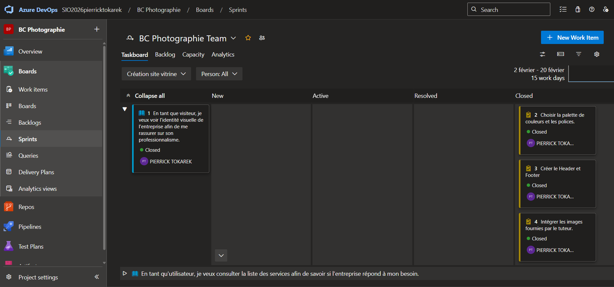
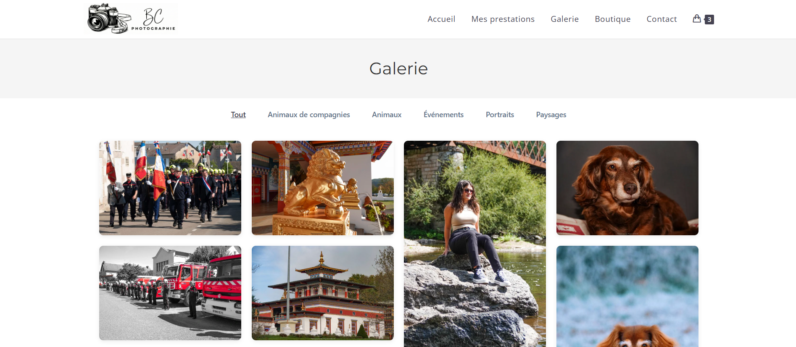
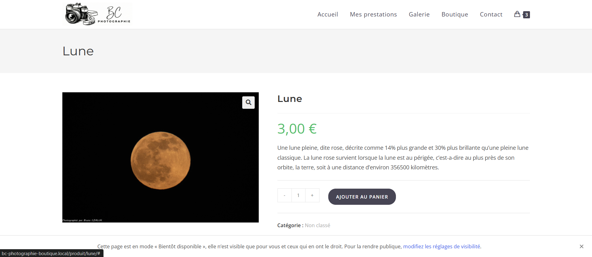
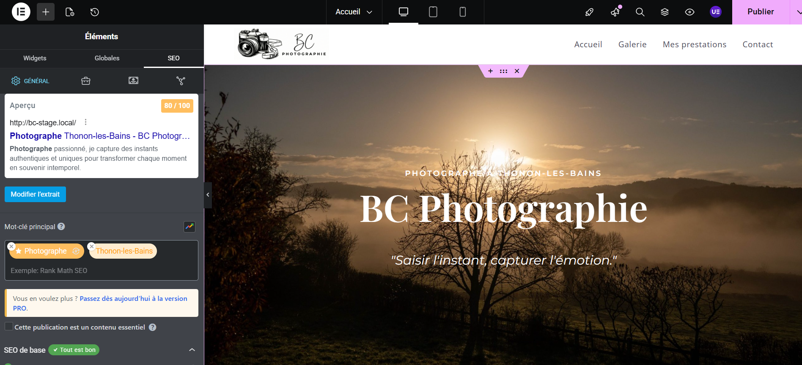

Stage : BC Photographie
Période : Du 02/02/2026 au 20/03/2026
Résumé du stage
Lors de mon stage de deuxième année chez BC Photographie, j'ai été chargé de la création complète de la présence en ligne du photographe[cite: 37, 53].
Mes missions ont couvert l'ensemble du cycle de vie du projet : de la conception d'un site vitrine et d'une e-boutique sous WordPress avec Elementor, jusqu'à la mise en place de l'infrastructure et l'optimisation de l'expérience utilisateur[cite: 42, 43, 49].
Site réalisé : bc-photographie.fr
1. Gestion Agile & Architecture
J'ai structuré mon développement en 3 Sprints grâce à Azure DevOps. Pour coder efficacement et sans risque, j'ai monté un environnement de développement local optimisé avec LocalWP.


2. Design & Optimisation Vitrine
Création d'un thème enfant sous OceanWP et design sur-mesure via Elementor. J'ai mis un point d'honneur à optimiser le poids des images (compression WebP) pour les performances, et j'ai intégré un formulaire de contact intelligent à logique conditionnelle.
3. Déploiement E-commerce
Intégration de WooCommerce avec des fiches produits personnalisées via ShopLentor. J'ai également écrit du CSS additionnel pour résoudre des conflits d'affichage complexes entre le thème et les extensions.


4. Mise en prod, SEO & Livraison
Mise en conformité stricte avec le RGPD et optimisation SEO poussée avec Rank Math. Enfin, j'ai géré la migration vers l'hébergement OVH et rédigé un tutoriel complet pour rendre le client 100% autonome.
Compétences mobilisées (Référentiel BTS SIO)
1. Mise en place d'un environnement de développement
Compétences : Gérer le patrimoine informatique | Organiser son développement professionnel.
2. Étude comparative et choix de l’infrastructure d’hébergement web
Compétences : Gérer le patrimoine informatique | Travailler en mode projet.
3. Sécurisation des accès et conformité légale (RGPD)
Compétences : Gérer le patrimoine informatique | Développer la présence en ligne de l’organisation.
4. Préparation au déploiement et gestion de la migration du site (Local vers Production)
Compétences : Gérer le patrimoine informatique | Mettre à disposition des utilisateurs un service informatique.
5. Résolution d'incidents post-migration (Base de données et Elementor)
Compétences : Répondre aux incidents et aux demandes d’assistance et d’évolution.
6. Accompagnement du client/tuteur et vulgarisation technique
Compétences : Répondre aux incidents et aux demandes d’assistance et d’évolution | Travailler en mode projet.
Tableau de Synthèse E5
Consultez l'ensemble des compétences validées durant mon parcours.
Voir le Tableau complet